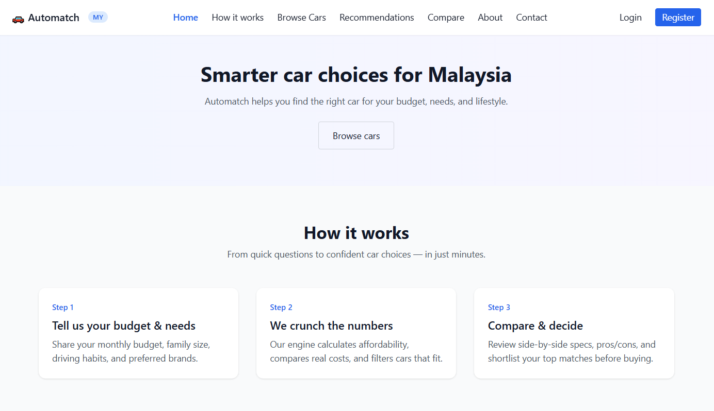

AI-assisted car recommendation platform for Malaysian buyers. Built with a PHP frontend, Flask recommendation API, and MySQL — unknowingly my first agentic pipeline before I knew what agentic meant.
Buying a car in Malaysia is complicated. Hundreds of models, varying loan rates, family constraints, brand preferences — most people either overspend or settle. Automatch was built to fix that: input your financial profile and preferences, get ranked recommendations with reasoning.
The system separates concerns cleanly — PHP handles the web layer, user auth, profiles, and rendering, while a dedicated Flask API handles all recommendation logic. The API accepts a JSON payload, runs a weighted scoring algorithm across the vehicle database, and returns ranked results with per-car reasoning.
Looking back, this is exactly what an agentic pipeline does: a user intent triggers a reasoning engine that profiles, scores, filters, and explains — autonomously. I built this before I had the vocabulary for it.
Each car is scored across four dimensions, then combined into a weighted total. The weights reflect what actually matters when buying a car in Malaysia — financial fit first, practicality second, then brand loyalty and features.
Financial fit uses amortization math — monthly payment calculated from price, interest rate, loan tenure, and down payment percentage. A car is financially scored 0–1 based on how it falls within the user's disposable income cap.
Three engineering problems that weren't obvious at the start — and taught the most.
Clean, functional UI built with Tailwind CSS. Click any screenshot to view full size.

The current engine is rule-based — intentional for V1. The roadmap moves toward a model that learns from user behaviour and explains its decisions.